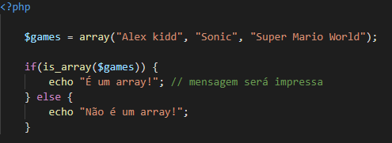

Diariamente utilizamos funções nativas do PHP que facilitam nosso trabalho. São elas:
Imprime uma variável de forma legível, incluindo arrays e objetos. Exemplo:
Junta os elementos de um array a partir de um caracter definido. No exemplo abaixo, o pipe é o carácter responsável por “colar” os elementos.
Ao contrário do implode, essa função “quebra” uma string a partir de um carácter.
Remove os espaços em branco no início e no final de uma string:
Verifica se a variável é um array:
Imprime o valor de forma estruturada, mostrando tipo e valor:

Verifica se a variável está vazia:
Retorna o número de elementos no array:
Utilizada para encerrar a execução do script. Equivalente a exit();
NOTA:
essa função não possui parâmetros mas podemos passar uma string que será apresentada antes do fim da execução do script.